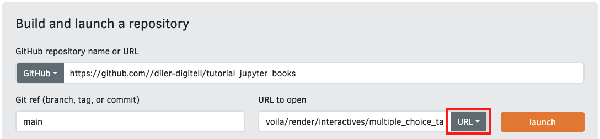
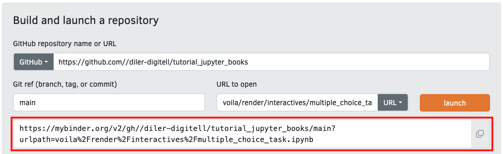

Making Your Book Truly Interactive#
Interactive content plays an important role in effective education. It encourages active participation and helps learners understand and remember what they have learned more deeply. By combining media, such as text, images, audio, video, and interactive elements, you can offer a more dynamic and accessible learning experience. Interactivity also supports self-paced learning, allowing individuals to focus on the areas where they need the most practice. As a result, interactive content is a useful tool for keeping learners engaged and improving outcomes.
Objectives 📍#
By the end of this section, you will be able to:
Create progress-check questions with dynamic feedback
Add multiple-choice, Likert-scale, and open-ended questions
Integrate interactive demonstrations to reinforce concepts
Use interactivity to make content more personalized and effective
Limitations of GitHub Pages#
While GitHub Pages is a powerful way to host educational resources, it is fundamentally a static site generator. This means it can render and display HTML, Markdown, Jupyter Books, and other media, but only in static form. It cannot execute a code or respond to user input in real time.
Code cells cannot run directly on a GitHub Pages site.
Dynamic visualizations won’t work natively.
Interactive widgets and real-time feedback elements will appear static.
This limitation can be a barrier to effective engagement, especially when learners need to test code, manipulate inputs, or receive personalized feedback based on their answers.
Enter MyBinder#
To overcome the limitations of static sites, MyBinder provides an elegant solution.
MyBinder is a free and open-source service that runs on Jupyter Notebooks without requiring any local installation. It allows users to create and share live versions of notebooks for delivering interactive learning activities. You can configure MyBinder with a specific environment, datasets, and code to ensure reproducibility. You can create and share a link that launches a ready-to-use version of your content.
MyBinder enables:
Progress check with short formative questions placed throughout the content
Feedback and self-assessment using Likert-scale items
Critical thinking through open-ended prompts
Support reflection and engagement using expandable hints, tips, or answer reveals
How to Create a MyBinder Link#
One of the most powerful features of Jupyter Book is the ability to integrate MyBinder, letting readers run code from the book’s pages with no local setup required.
Below is a step-by-step guide to setting up MyBinder — and why you may want to do so selectively.
1. Setting Up the MyBinder Environment#
Go to mybinder.org.
Enter your GitHub repository.
Click
launchto test your environment.

Once it successfully launches, copy the MyBinder URL or Binder badge code.
The badge is a clickable image that opens the environment when clicked. You can add this badge to your Jupyter Book’s README or any Markdown/Jupyter Notebook file to give readers direct access.
2. Changing the _config.yml#
To make interactive buttons appear within Jupyter Book pages, modify the config.yml file found in the lecture folder by adding the following bit of code:
launch_buttons:
notebook_interface : "classic" # Or jupyterlab
binderhub_url : "https://mybinder.org"
thebe : true
notebook_interface: Specifies the interface (classic Jupyter vs. JupyterLab).
binderhub_url: Points to the Binder service you’re using (normally https://mybinder.org).
thebe: true: Enables Thebe, allowing in-page execution of code cells via Binder.
Now, both the Binder- and Live Code Badge are displayed on your Book and you should be good to go!
Why This Isn’t Always Ideal ⚠️#
Although making your entire book interactive with Binder is powerful, it also has significant downsides that can affect user experience, performance, and scalability:
❌ 1. Binder can be slow and unreliable
Launching Binder can take 30–90 seconds.
It runs on limited, shared resources.
Sessions may disconnect or time out.
❌ 2. Not all pages need interactivity
Static pages like theory, instructions, and reading material don’t need an active Binder kernel.
Enabling intractivity through Binder on every page adds unnecessary overhead without real benefits.
❌ 3. Launching the entire repository is not user-friendly
Binder opens the file browser with all files visible.
Learners may not know which file to open or how to proceed.
➡️ A better user experience often comes from launching specific notebooks with clearly labeled Binder links, rather than the entire repository.
A Better Practice: Use Standalone Interactive Notebooks for Specific Tasks 🎯#
Instead of enabling interactivity across your entire course, a more effective approach is to designate specific notebooks for interactive elements and place them exactly where they are needed. These notebooks:
Do not form part of the main course structure in
_toc.yml.Do serve targeted purposes like quick demos, progress questions, or simulations.
Live in a separate folder (e.g.,
extras/,binder/, orinteractives/).Are linked directly from relevant sections of your course with explicit Binder links.
This way, readers can quickly launch the notebooks that require interactivity without cluttering or slowing down the entire book. It also provides a more guided experience, focusing attention on the exact tasks that benefit from running code.
Examples include:
Quick demonstrations of key concepts
Self-paced progress questions
Short multiple-choice quizzes to reinforce concepts
Interactive simulations or visualizations
By keeping your main book static and only linking to Binder for specific, high-value interactive experiences, you achieve better performance, lower confusion, and targeted engagement — making for an overall more effective learning environment.
Instructions#
Step 1: Set Up Your Repository#
Ensure you have already created and set up your GitHub repository.
Inside your repository, create a folder named
interactives.In your GitHub repository, click on
Add File→Create new fileIn
Name your file...box, enterinteractives/.gitkeep.Click on
Commit Changes

Step 2: Create the Interactive Task You Want#
Create a new Jupyter Notebook file, i.e.
multiple_choice_task.ipynb.
⚠️ Don't have Jupyter Notebooks installed?
Alternative: Use Google Colab (no installation needed):
- Go to colab.research.google.com
- Click "New Notebook"
- Paste your provided code
- Edit as needed
- Click File > Save a copy in Drive
Note. A Google account is required.
Copy-paste the code for the task you want to create inside your Notebook.
Show Code for Multiple-Choice Quizzes
- Do not change the dictionary keys:
"prompt","options","answer", and"feedback". - In each
"feedback"sub-dictionary, the keys (e.g.,"A","B", etc.) must match the option labels. - You can freely edit the text (question prompts, option text, and feedback messages) to suit your content.
- Be careful to update the
"answer"field if you change the options.
By adjusting the code below, you should be able to create something like this:
import ipywidgets as widgets
from IPython.display import display, clear_output, HTML
quiz_data = [
{
"prompt": "Which measure of central tendency is most affected by outliers?",
"options": [
"A) Median",
"B) Mean",
"C) Mode",
"D) Range"
],
"answer": "B",
"feedback": {
"A": "No. The median is typically robust against outliers.",
"B": "Correct! The mean can shift significantly due to outliers.",
"C": "Not quite. The mode represents the most frequent value and is often unaffected by extreme values.",
"D": "Range is not a measure of central tendency; it measures the spread between the minimum and maximum."
}
},
{
"prompt": "What is the median of the set [3, 5, 6, 8, 10]?",
"options": [
"A) 5",
"B) 6",
"C) 6.5",
"D) 7"
],
"answer": "B",
"feedback": {
"A": "Close, but 5 is the second value, not the middle in an ordered set of five values.",
"B": "Correct! With an odd number of values, the median is the middle one, which is 6 here.",
"C": "This would be the median if you had two middle numbers, but this list has five values.",
"D": "7 does not appear in the list and isn't in the middle."
}
},
{
"prompt": "Which term refers to how spread out data points are from their average value?",
"options": [
"A) Standard deviation",
"B) Correlation coefficient",
"C) Average",
"D) Median"
],
"answer": "A",
"feedback": {
"A": "Correct! Standard deviation measures how much the data vary around the mean.",
"B": "Correlation coefficient measures the linear relationship between two variables.",
"C": "Another word for the mean, which is a central tendency, not spread.",
"D": "The median is a central tendency measure, not a spread measure."
}
},
{
"prompt": "If P(A) = 0.4 and P(B) = 0.5, and A and B are independent events, what is P(A ∩ B)?",
"options": [
"A) 0.2",
"B) 0.4",
"C) 0.45",
"D) 0.9"
],
"answer": "A",
"feedback": {
"A": "Correct! For independent events, P(A ∩ B) = P(A) × P(B) = 0.4 × 0.5 = 0.2.",
"B": "No. That’s just P(A); independence requires multiplying the probabilities.",
"C": "This would not be correct; it’s larger than 0.2 and does not reflect independence properly.",
"D": "This is too large; definitely not the product of 0.4 and 0.5."
}
}
]
######### This code block defines a custom CSS to visually enhance how multiple choice questions and feedback messages look. #########
custom_css = HTML("""
<style>
.questions-container {
border: 3px solid #ddd; /* You can change to #aaa or #ccc for darker/lighter border */
padding: 15px; /* Increase padding to 20px for more space */
margin-bottom: 15px;
border-radius: 15px; /* Try 10px or 20px for more rounded corners */
background: linear-gradient(to bottom, #fafafa 0%, #ffffff 100%); /* Replace with solid color: background: #f0f0f0; */
}
.question-row {
margin: 15px 0 /* Adjust spacing between each question */
}
.feedback-card {
border: 1px solid #ccc; /* Try #bbb or #999 for stronger border */
background: #fefefe; /* Try #f9f9f9 or #e6f7ff for soft color */
padding: 15px;
margin: 10px 0;
border-radius: 5px; /* Customize how round the feedback box is */
box-shadow: 1px 1px 34px rgba(0, 0, 0, 0.1);/* Increase shadow: 2px 2px 6px rgba(0,0,0,0.15); or remove it with box-shadow: none; */
}
.feedback-error {
border: 1px solid #d9534f !important; /* Try #c9302c for darker red */
background: #f9f1f0 !important; /* Try #fbe9e7 or any light red/pink */
color: #d9534f !important; /* You could try #b52b27 */
/* You can make this match feedback-error or choose a different tone for wrong answers */
}
.feedback-correct {
border: 1px solid #5cb85c !important; /* Try #4CAF50 for a more vibrant green */
background: #f0fff0 !important; /* Try #e8f5e9 for soft green */
color: #3c763d !important; /* You could try #256029 for deeper green */
}
.feedback-incorrect {
border: 1px solid #d9534f !important;
background: #f9f1f0 !important;
color: #d9534f !important;
}
.feedback-card h4 {
margin-top: 0;
color: #2c3e50; /* Change to #333 or #000 for stronger contrast */
}
.mcq-radio .widget-radio-box {
margin: 0 5px 0 0 !important; /* Add space between radio buttons and text */
}
.mcq-radio .widget-label {
font-size: 0.9rem;
color: #444;
/* You can also add: font-weight: bold; */
}
</style>
""")
####################################################################
question_widgets = []
for q in quiz_data:
prompt_html = widgets.HTML(
value=f"<b>{q['prompt']}</b>"
)
radio = widgets.RadioButtons(
options=q["options"],
value=None,
layout=widgets.Layout(width='auto')
)
radio.add_class("mcq-radio")
question_box = widgets.VBox([prompt_html, radio])
question_box.add_class("question-row")
question_widgets.append((question_box, radio, q))
questions_box = widgets.VBox([qw[0] for qw in question_widgets])
questions_box.add_class("questions-container")
feedback_output = widgets.Output()
submit_button = widgets.Button(description="Submit", button_style='success')
retake_button = widgets.Button(description="Retake", button_style='warning')
def on_submit_click(_):
with feedback_output:
clear_output()
display(HTML("<h2 style='color: #444; margin-bottom:10px;'>Your Results</h2>"))
score = 0
for (question_box, radio, q_data) in question_widgets:
chosen = radio.value
if chosen is None:
display(HTML(f"""
<div class="feedback-card feedback-error">
<h4>{q_data['prompt']}</h4>
<p><strong>No option selected.</strong> Please pick a response.</p>
</div>
"""))
continue
chosen_letter = chosen.split(')')[0].strip()
fb_text = q_data["feedback"].get(chosen_letter, "No feedback available.")
if chosen_letter == q_data["answer"]:
score += 1
feedback_class = "feedback-correct"
else:
feedback_class = "feedback-incorrect"
display(HTML(f"""
<div class="feedback-card {feedback_class}">
<h4>{q_data['prompt']}</h4>
<p style="font-style: italic;">You chose: <strong>{chosen}</strong></p>
<p>{fb_text}</p>
</div>
"""))
display(HTML(f"<h3>Your Score: {score}/{len(question_widgets)}</h3>"))
def on_retake_click(_):
with feedback_output:
clear_output()
for (question_box, radio, q_data) in question_widgets:
radio.value = None
submit_button.on_click(on_submit_click)
retake_button.on_click(on_retake_click)
buttons_box = widgets.HBox([submit_button, retake_button])
display(custom_css)
display(questions_box, buttons_box, feedback_output)
Show Code for Quizzes with Open-Ended Questions
- Do not change the dictionary keys:
"prompt","answer","feedback_correct", and"feedback_incorrect". - In
"answer", provide the correct answer to your question. If multiple correct answers are possible, separate them with coma. - You can freely edit the text (question prompts, text, and feedback messages for correct and incorrect responses) to suit your needs.
By adjusting the code below, you should be able to create something like this:
import ipywidgets as widgets
from IPython.display import display, clear_output, HTML
open_ended_data = [
{
"prompt": "Which year was the original Portal first released?",
"answer": ["2007"],
"feedback_correct": "Correct! Portal was originally released in 2007.",
"feedback_incorrect": "Incorrect. The correct answer is 2007."
},
{
"prompt": "Portal was built using which engine?",
"answer": ["source", "source engine"],
"feedback_correct": "Correct! Portal was created in Source Engine",
"feedback_incorrect": "Incorrect. The correct answer is the Source Engine."
},
{
"prompt": "Which game developer created and published Portal?",
"answer": ["valve"],
"feedback_correct": "Correct! Valve developed and published Portal.",
"feedback_incorrect": "Incorrect. The correct answer is Valve."
},
{
"prompt": "Who is the main playable protagnonist in Portal?",
"answer": ["chell"],
"feedback_correct": "Correct! The main character is Chell.",
"feedback_incorrect": "Incorrect! The main character is Chell."
},
{
"prompt": "What is the name of the AI antagonist in the Aperture Science facility?",
"answer": ["glados"],
"feedback_correct": "Correct! GLaDOS is the AI",
"feedback_incorrect": "Incorrect. The correct answer is GLaDOS."
}
]
custom_css = HTML("""
<style>
.questions-container {
border: 1px solid #ddd;
padding: 15px;
margin-bottom: 15px;
border-radius: 5px;
background: linear-gradient(to bottom, #fafafa 0%, #ffffff 100%);
}
.question-row {
margin: 15px 0;
}
.feedback-card {
border: 1px solid #ccc;
background: #fefefe;
padding: 15px;
margin: 10px 0;
border-radius: 5px;
box-shadow: 1px 1px 4px rgba(0, 0, 0, 0.1);
}
.feedback-error {
border: 1px solid #d9534f !important;
background: #f9f1f0 !important;
color: #d9534f !important;
}
.feedback-correct {
border: 1px solid #5cb85c !important;
background: #f0fff0 !important;
color: #3c763d !important;
}
.feedback-incorrect {
border: 1px solid #d9534f !important;
background: #f9f1f0 !important;
color: #d9534f !important;
}
.feedback-card h4 {
margin-top: 0;
color: #2c3e50;
}
</style>
""")
question_widgets = []
for q in open_ended_data:
prompt_html = widgets.HTML(
value=f"<b>{q['prompt']}</b>"
)
text_input = widgets.Text(
value='',
placeholder='Type your answer here...',
layout=widgets.Layout(width='300px')
)
question_box = widgets.VBox([prompt_html, text_input])
question_box.add_class("question-row")
question_widgets.append((question_box, text_input, q))
questions_box = widgets.VBox([qw[0] for qw in question_widgets])
questions_box.add_class("questions-container")
feedback_output = widgets.Output()
submit_button = widgets.Button(description="Submit", button_style='success')
retake_button = widgets.Button(description="Retake", button_style='warning')
def on_submit_click(_):
with feedback_output:
clear_output()
display(HTML("<h2 style='color: #444; margin-bottom:10px;'>Your Results</h2>"))
score = 0
total = len(question_widgets)
for (question_box, text_input, q_data) in question_widgets:
user_answer = text_input.value.strip()
correct_answers = [ans.strip().lower() for ans in q_data["answer"]]
if not user_answer:
display(HTML(f"""
<div class="feedback-card feedback-error">
<h4>{q_data['prompt']}</h4>
<p><strong>No answer provided.</strong> Please type your response.</p>
</div>
"""))
continue
if user_answer.lower() in correct_answers:
score += 1
display(HTML(f"""
<div class="feedback-card feedback-correct">
<h4>{q_data['prompt']}</h4>
<p><em>You answered:</em> <strong>{user_answer}</strong></p>
<p>{q_data['feedback_correct']}</p>
</div>
"""))
else:
display(HTML(f"""
<div class="feedback-card feedback-incorrect">
<h4>{q_data['prompt']}</h4>
<p><em>You answered:</em> <strong>{user_answer}</strong></p>
<p>{q_data['feedback_incorrect']}</p>
</div>
"""))
display(HTML(f"<h3>Your Score: {score}/{total}</h3>"))
def on_retake_click(_):
with feedback_output:
clear_output()
for (question_box, text_input, q_data) in question_widgets:
text_input.value = ""
submit_button.on_click(on_submit_click)
retake_button.on_click(on_retake_click)
buttons_box = widgets.HBox([submit_button, retake_button])
display(custom_css)
display(questions_box, buttons_box, feedback_output)
Show Code for Likert Scale Items
- Do not change the dictionary keys like
"prompt"or"feedback". - Ensure feedback keys exactly match your Likert option labels.
- You can edit the text for question prompts, and feedback messages to suit your needs.
By adjusting the code below, you should be able to create something like this:
import ipywidgets as widgets
from IPython.display import display, clear_output, HTML
likert_options = [
"Strongly Disagree",
"Disagree",
"Neutral",
"Agree",
"Strongly Agree"
]
questions_data = [
{
"prompt": (
"I have a clear understanding of fundamental research methods concepts (e.g., hypothesis formulation, study design, data collection, and analysis."
),
"feedback": {
"Strongly Disagree": "Consider revisiting foundational concepts through our online courses. Focus on key areas like hypothesis development, research design, and data analysis.",
"Disagree": "Consider revisiting foundational concepts through our online course. Focus on key areas like hypothesis development, research design, and data analysis.",
"Neutral": "You have some understanding but may need to reinforce your knowledge. Try engaging more with practical examples and try applying already learned concepts to real-world scenarios.",
"Agree": "Great! Continue deepening your understanding by exploring advanced topics or applying research methods in practical projects",
"Strongly Agree": "Great! Continue deepening your understanding by exploring advanced topics or applying research methods in practical projects."
}
},
{
"prompt": (
"I feel confident in applying research methods to real-world problems, such as designing a study, analyzing data, and interpreting results."
),
"feedback": {
"Strongly Disagree": "Focus more on practical applications, such as designing simple surveys, collecting data, and using basic analysis tools.",
"Disagree": "Focus more on practical applications, such as designing simple surveys, collecting data, and using basic analysis tools.",
"Neutral": "You have some understanding, try working on practical exercises, such as analyzing sample datasets",
"Agree": "That’s great! Keep refining your skills by tackling more complex research problems.",
"Strongly Agree": "That’s great! Keep refining your skills by tackling more complex research problems."
}
},
{
"prompt": (
"I can critically evaluate research studies, identifying strengths, limitations, and potential biases in methodology and findings."
),
"feedback": {
"Strongly Disagree": "Improve your critical evaluation skills by reading more research papers.",
"Disagree": "Improve your critical evaluation skills by reading more research papers.",
"Neutral": "You have some analytical ability, but refining it through writing critiques on some studies can strengthen your skills.",
"Agree": "Great job! To further enhance your evaluation skills, explore advanced statistical critiques, and stay updated on evolving research methodologies.",
"Strongly Agree": "Great job! To further enhance your evaluation skills, explore advanced statistical critiques, and stay updated on evolving research methodologies."
}
}
]
custom_css = HTML("""
<style>
.questions-container {
border: 1px solid #ddd;
padding: 15px;
margin-bottom: 15px;
border-radius: 5px;
background: linear-gradient(to bottom, #fafafa 0%, #ffffff 100%);
}
.question-row {
margin: 15px 0;
}
.prompt-html {
margin-bottom: 5px;
color: #2c3e50;
font-weight: bold;
}
.feedback-card {
border: 1px solid #ccc;
background: #fefefe;
padding: 15px;
margin: 10px 0;
border-radius: 5px;
box-shadow: 1px 1px 4px rgba(0, 0, 0, 0.1);
}
.feedback-error {
border: 1px solid #d9534f !important;
background: #f9f1f0 !important;
color: #d9534f !important;
}
.feedback-card h4 {
margin-top: 0;
color: #2c3e50;
}
.likert-toggle .widget-toggle-button {
width: 180px !important;
font-size: 0.9rem;
color: #444;
}
.likert-toggle .mod-selected {
background-color: #5bc0de !important;
color: white !important;
}
</style>
""")
question_widgets = []
for q in questions_data:
prompt_html = widgets.HTML(value=f"<p>{q['prompt']}</p>")
prompt_html.add_class("prompt-html")
toggles = widgets.ToggleButtons(
options=likert_options,
value=None,
layout=widgets.Layout(width='auto'),
style={'button_width': '180px'}
)
toggles.add_class("likert-toggle")
question_box = widgets.VBox([prompt_html, toggles])
question_box.add_class("question-row")
question_widgets.append((question_box, toggles, q))
questions_box = widgets.VBox([qw[0] for qw in question_widgets])
questions_box.add_class("questions-container")
feedback_output = widgets.Output()
submit_button = widgets.Button(description="Submit", button_style='success')
retake_button = widgets.Button(description="Retake", button_style='warning')
def on_submit_click(_):
with feedback_output:
clear_output()
display(HTML("<h2 style='color: #444; margin-bottom:10px;'>Your Reponses</h2>"))
for (question_box, toggles, q_data) in question_widgets:
chosen = toggles.value
if chosen is None:
display(HTML(f"""
<div class="feedback-card feedback-error">
<h4>{q_data['prompt']}</h4>
<p>No option selected. Please pick a response.
</div>
"""))
else:
fb_text = q_data["feedback"].get(chosen, "No feedback available.")
display(HTML(f"""
<div class="feedback-card">
<h4>{q_data['prompt']}</h4>
<p style="font-style: normal;"><span style="font-style: italic;">Your response: </span><strong>{chosen}</strong>
<p>{fb_text}</p>
</div>
"""))
def on_retake_click(_):
with feedback_output:
clear_output()
for (_, toggles, _) in question_widgets:
toggles.value = None
submit_button.on_click(on_submit_click)
retake_button.on_click(on_retake_click)
buttons_box = widgets.HBox([submit_button, retake_button])
display(custom_css)
display(questions_box, buttons_box, feedback_output)
💡 You only need to edit the dictionary to modify the questions.
Optional: Create markdown cells above or below the code to provide intructions and additional information.
Add an
ipynbfile to theinteractivesfolder in your repository and click on Commit changes
Step 3: Create the MyBinder Link#
Visit MyBinder (https://mybinder.org)
Fill in the following:
GitHub repository:
https://github.com/your_user_name/your_repositoryGit ref (branch, tag, or commit):
mainFile to open (in JupyterLab):
voila/render/interactives/multiple_choice_task.ipynbMake sure to switch from
FiletoURLClick Launch and test your quiz.

Step 4: Add the Binder Link to Your Course Page#
Copy your Binder URL.

Paste it into your course content. Example:
[Click here to launch the quiz on Binder](https://mybinder.org/v2/gh/your_username/your_repository/main/?urlpath=voila%2Frender%2Finteractives%2Fmultiple_choice_task.ipynb)
Step 5: Add Required Packages#
Go to your requirements.txt file in your repository and add the following lines:
voila
ipywidgets
This ensures MyBinder installs everything needed to run your interactive quiz.
Mixing Static Content with Interactive Elements#
So far, everything we’ve done has involved creating individual links to different interactive parts:
A link for your multiple-choice quiz
A link for your open-ended question notebook
A link for your Likert self-check
Sometimes, you do not want to split your learning material into multiple linked parts.
You want everything in one place — the explanations, the visuals, and the interactive elements.
The Ideal Format#
Use a single Jupyter Notebook that:
Contains static content in Markdown cells: explanations, headers, instructions, diagrams, etc.
Embeds interactive widgets (multiple choice questions, open-ended questions, Likert-scale questions) directly in between your sections.
Is rendered as a clean, app-like experience using MyBinder.
How to Do It#
Organize your Jupyter Notebook like a chapter:
Title and learning objectives (Markdown)
Explanation of the concept (Markdown)
Embedded multiple choice or open-ended questions (Code cell)
Visual or image (Markdown or code)
Likert scale reflection (Code cell)
Keep everything in one
.ipynbfile.Add the file to your
interactivesfolder.Launch it using MyBinder like this:
# Course Dashboard
- [Interactive Lesson 1](https://mybinder.org/v2/gh/your_user_name/yourCourse/main/?urlpath=voila%2Frender%2Finteractives%2Finteractive_lesson_1.ipynb)
- [Interactive Lesson 2](https://mybinder.org/v2/gh/your_user_name/yourCourse/main/?urlpath=voila%2Frender%2Finteractives%2Finteractive_lesson_2.ipynb)
- [Interactive Lesson 3](https://mybinder.org/v2/gh/your_user_name/yourCourse/main/?urlpath=voila%2Frender%2Finteractives%2Finteractive_lesson_3.ipynb)
Next section:#
In the next section, you will learn how to integrate citations and bibliographies.